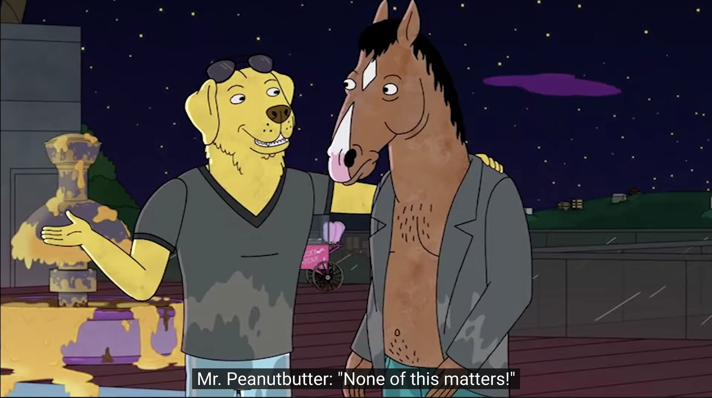

It happens that the stage sets collapse. Rising, streetcar, four hours in the office or the factory, meal, streetcar, four hours of work, meal, sleep, and Monday Tuesday Wednesday Thursday Friday and Saturday according to the same rhythm — this path is easily followed most of the time. But one day the “why” arises and everything begins in that weariness tinged with amazement. “Begins” — this is important.
by Albert Camus
一次存在主义危机
Part 1: 牧师
“我在 25 岁的时候陷入了虚无主义”，他说，“是神拯救了我。”
这是一个牧师跟我说的。刚踏上美利坚这片土地的我，人生地不熟，被一位学长拉去了一个校园的团契，虽然我对基督教也不反感，但也不排斥，并且本着还能免费吃一段饭的想法，就跟着去了。于是就听到了刚才那句话。
无论是前半句还是后半句，我都不怎么理解。但我也没有想理解，毕竟受了这么多年的无神论教育，自然也觉得这是一句拉人入教的说辞。我没有多想这句话，继续吃他们提供免费晚饭。直到几年后，我才明白他说的 “虚无主义” 是怎么一种心态，以及为什么说是宗教拯救了他。
Part 2: Happy Ending
“等你考上大学了，你就自由了，想怎么玩就怎么玩！”直到现在，这句话依旧被无数的高中老师所重复。但显而易见地，如果不在意绩点，这句话可以是真的。但大部分人都很清楚，为了毕业后找到一份理想的工作或进一步升学，不得不牺牲手头的时间去备考，刷题，实习，投简历。
“等找到一份好工作，生活就轻松了。” 这句话的逻辑和上面是一样的，很明显，现实不可能那么好，因为找到工作后，还有结婚和买房在等着。
不过立志当“咸鱼”的我，把这句话当真了：找到工作，养活自己就够了，想干嘛就干嘛，多自由啊！
后来，我真的找到了一份理想的工作。这份工作，对他人来说，或许并不够好，但对我这种十几年来混迹于各种非一流学校的人来说，太好了。这种感觉，就像游戏里的 Happy Ending。
Part 3: 入职
入职后，我入手了一台 Switch，开始了咸鱼的第一步 ———— 玩游戏。玩游戏是快乐的，但对我来说，这份快乐却是有限的 ———— 我开始感到了无聊。我内心还是想做点什么。游戏对我来说终究只是一种消遣，我还是得把大部分时间花在有意义的正事上。
可是，什么是有意义的正事？
仔细想想，“有意义的正事” 这个说法有点奇怪，因为对我来说 “有意义的事”，不就是 “正事” 吗？
那什么是 “有意义” 呢？
对工作有帮助的事，是有意义的吗？这个听上去有点道理，可是工作一天 8 小时，咸鱼的我为什么要在工作之外去忙它呢？而且，工作是一个无奈的选择，是为了要养活自己。
等等，为什么要养活自己？我脑内突然冒出了一个可怕的想法 ———— 我为什么要活着？
当冒出这个想法的时候，我其实笑了笑：我怎么会问出这么傻的问题？活着的意义，不是从小到大一直都思考过了的吗？小学的时候，是为了考上重点中学；中学的时候，是为了考上重点大学；大学的时候，是为了取得理想的工作。
可是，现在呢？
刚才也说了，我拿到了我现在认为满意的工作，我突然对未来没有期许了！我不知道我该做什么了！
如果什么都不做，这个世界也不会有任何影响，这个世界少了我也不会怎样。那…我真的可以不存在这世上？
不行不行，还是继续工作吧，想这么多干嘛，我好蠢！
Part 4: WFH
因为疫情的影响，开始在家工作。虽然我真的很讨厌疫情，但是我并不讨厌 WFH。居家工作后，空闲时间多了很多。
上下班更加灵活了了，而且也没有通勤的苦恼，工作累了还可以去沙发上小憩一会 ———— 作为咸鱼的我，更加自由了。
虽然空闲时间增多了，但因为是疫情下的 WFH，我不能随心所欲的出去玩了。更多的时候，还是躺在家里无所事事。
无聊的时候，我开始胡思乱想，又回到了刚才的问题。
本以为，等过一两个月回到 office 之后，投入工作和社交后，就不会想那么多了。可没想到，我想了快一年了。而且越想越不对劲 ———— 我开始认为这世上的一切都是没有意义的了。
Part 5: Bojack Horseman and Oscar
Bojack Horseman，是一部电视剧的名字，也是这部电视剧主人公的名字。
虽然是过气明星，但 Bojack Horseman 就像个国王一样，没有金钱和工作的烦恼。可奇怪的是，他仍然不快乐。
第一季，他的自传出版了。可是他依旧不快乐。
第二季，他出演了梦寐以求的电影并饰演了从小就敬佩的英雄，可是他发现这仍旧没有使他快乐。
第三季，他争取奥斯卡，这次失败了。当然，没有变化，他还是不快乐。
Part 6: None of this matters

“None of this matters”
这是 Mr. Peanutbutter 安慰 Bojack 落选时的话，出现在第三季的第十集。可我没有明白，为什么不重要呢？
再把进度条倒回去看看，发现他还说了这么一段话：
You come to work, clock in. You put sugar in your coffee and watch it slowly disappear into nothingness. But the sugar doesn’t know why. Sugar didn’t ask to be born.
是呀，Sugar didn’t ask to be born. And neither did I!
这中间发生了什么吗？可是仔细看看，这中间只有一个 Mr. Peanutbutter 编造奥斯卡获奖名单的搞笑桥段。难道我在最开始就忽视了什么吗？
Part 7: Existential Crisis
因为不知道发生了什么，于是我去搜了点影评，然后在 YouTube 上发现了这个 The Philosophy of BOJACK HORSEMAN – Wisecrack Edition。很巧，B 站上也有个中文搬运 【哲思趣谈】马男波杰克的哲学 @柚子木字幕组。
虽然我前面思考了这么久，甚至花了一年，甚至中间以为自己心理出问题了。可是，我的问题，却在视频的几分钟里就被描绘清楚了。
我经历了一次存在主义危机。
我一直不知道这就是存在主义危机，也不知道原来在我眼里，世界渐渐变得虚无。
如 Sartre 所说，我太自由了。去年的时间里，我得到了前所未有的自由，而这种极强的自由，却没有带来我所期望的快乐。归根结底，是当时的我渴望寻找新的意义，但却又发现宇宙的一切都可以没有任何意义。
Part 8: Embrace the absurd
知道是什么问题之后，解决方案就变得明了了。毕竟这个话题在百年前就有众多哲学家探讨过了，当然，现在也有。
先回过头再看看那位牧师，他的解决方法就是在宗教中寻求自己存在的意义。几乎所有的宗教都给了人们存在的意义，尤其在基督教里，人从出生到死亡，都是为了神的荣耀而活。
可是，尼采说过 “god is dead”。在人们逐渐回归理性和人本之后，神的概念已经渐渐淡出了部分人，包括我自己，的视野。
就如 The Philosophy of BOJACK HORSEMAN – Wisecrack Edition 讲得一样，我们也可以选择让自己忙于生活或沉浸于娱乐之中而无暇去思考这个问题。但终究要面对的时候，我们可以选择像 Camus 所描述的西西弗斯一样 “Embrace the absurd”，承认这个世界就是没有意义的，但依旧选择继续活下去，并且，意义不是外界所赋予的，更多地，是自己赋予自己的。
Part 9: After the crisis
Quara 上的一个问题 Does everyone go through existential crisis? 提到，并不是每个人都会经历一次存在主义危机。而且，这种危机，有时候会很严重，有时候会很轻，它可能只出现一次，也可能在未来继续出现。
但无论如何，我至少跨过了这一次的危机，至少，经历过这次的危机，我有了成长：对这个世界有了新的审视，对自己有了新的理解。如果还有下一次的话，那就再写一片文章吧 ^_^
Reference: